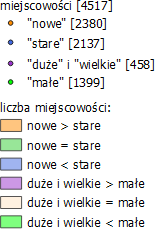

Mapa przedstawia rozmieszczenie i statystyki dotyczące miejscowości w Polsce, które posiadają w swojej nazwie słowo Nowy/a/e/, Stary/a/e, Duży/a/e bądź Wielki/a/e, Mały/a/e.
Siatka stworzona jest z sześciokątów w odstępie 20 km (wysokość oczka siatki).
Szczegółowe statystki, prezentujące liczby miejscowości w formie wykresów słupkowych znajdują się w kolejnych zakładkach panelu.
Dane pochodzą z Państwowego Rejestru Nazw Geograficznych, udostępnianego przez GUGiK.
Analizy wykonano w programie QGIS.
Legenda:
Kontakt: marylaGISdev gmail com